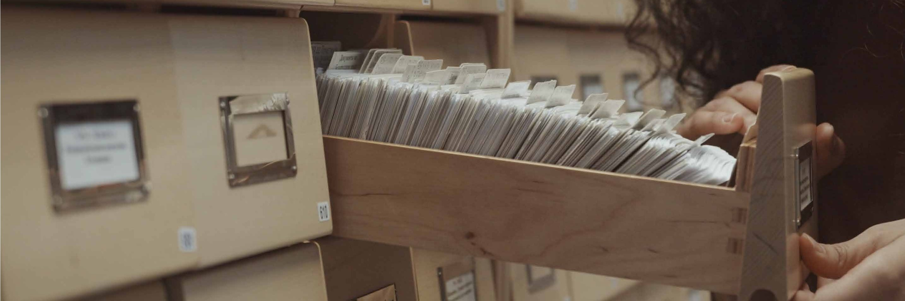

EL MUSEO MÁS ALLÁ DE SUS MUROS
Tatiana Wolff Rojas. Diseñadora y Museóloga
¿Qué es Museologías Expandidas?
Es una plataforma digital de investigación, archivo y difusión de mi trabajo museológico. Reúne cerca de veinte proyectos de exposiciones, estudios de memorias, archivos y curaduría patrimonial, desarrollados junto a diversas comunidades, equipos de trabajo, amigas y amigos en distintos territorios, desde 2008.
Propone una cartografía museal para conocer los procesos, contextos y metodologías colaborativas de los distintos proyectos, y acercarse a una práctica museológica que se expande hacia otros espacios, formatos y disciplinas: obras de teatro, etnografías, rutas patrimoniales, archivos digitales, materiales de mediación, sitios de memoria, docencia, entre otros.
Les invito a tomarse el tiempo para recorrer estos procesos, conocer las experiencias detrás de cada proyecto y compartirlos con quienes crean que podrían interesarse.

Ver video